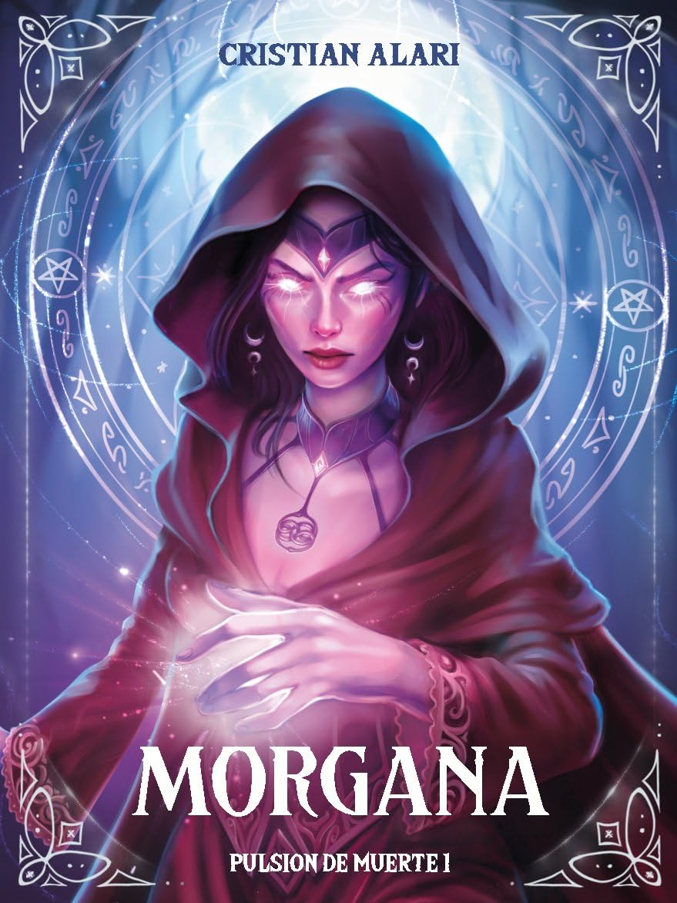

«¿El rey Arturo en Lanús?»
El obispo de Lanús llevaba una vida tranquila y apacible hasta que una noche al volver de su iglesia, se topó con un desconocido que vino a cobrarse una deuda del pasado. Le auguró una cruel y dolorosa venganza y de un día para otro perdió todo: su familia, su trabajo y su fe.
Allí comenzará un derrotero para resolver un rompecabezas macabro y averiguar quién está detrás de su padecimiento. En el camino se encontrará con una misteriosa y seductora mujer llamada Morgana que lo ayudará en su cruzada y juntos se verán envueltos en una serie de asesinatos rituales que amenazan con hacer tambalear las estructuras de la razón.
Un policía retirado apodado “el Tumba” experto en este tipo de casos es convocado por la oficial Maderna para que la ayude en la investigación con la excusa de que una de las víctimas es su sobrino. Ambos llegarán a la conclusión de que los hechos guardan relación con antiguos ritos paganos en donde las víctimas son ofrecidas como sacrificios humanos.
Una atrapante novela que llevará a los protagonistas a enfrentar situaciones extremas en donde deberán lidiar con sus creencias, poniendo a prueba su ética, y sus ambiciones de poder. Un viaje que nos conducirá a través de los misterios de la religión, la brujería y la mitología celta.
Una nueva historia se está gestando... Los secretos aún no revelados pronto verán la luz.
«Una trama oscura y atrapante de principio a fin. La mezcla entre el misterio policial y la mitología celta te deja sin aliento.»
«Personajes muy bien construidos y un ritmo vertiginoso. No podés parar de leer para entender el rompecabezas.»
«Un suspenso excelente ambientado con una atmósfera única. Esperando con ansias la continuación.»
Miembro Oficial
Pulsión de muerte